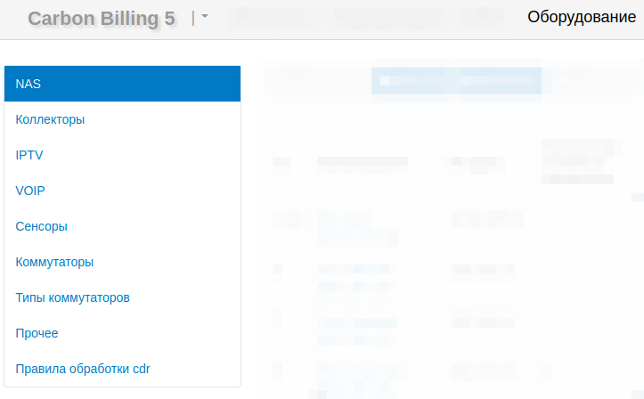
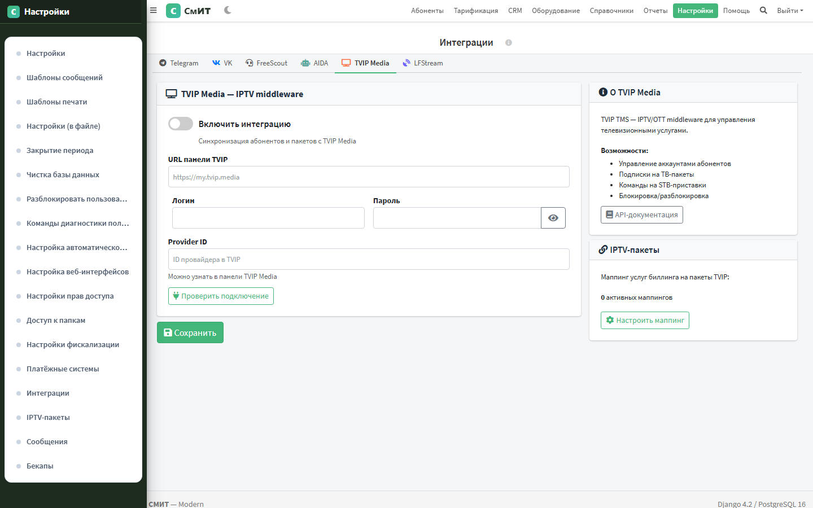
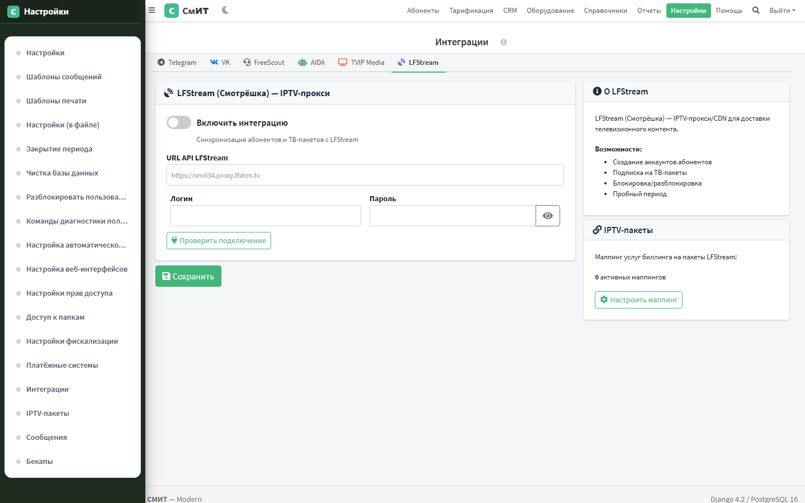
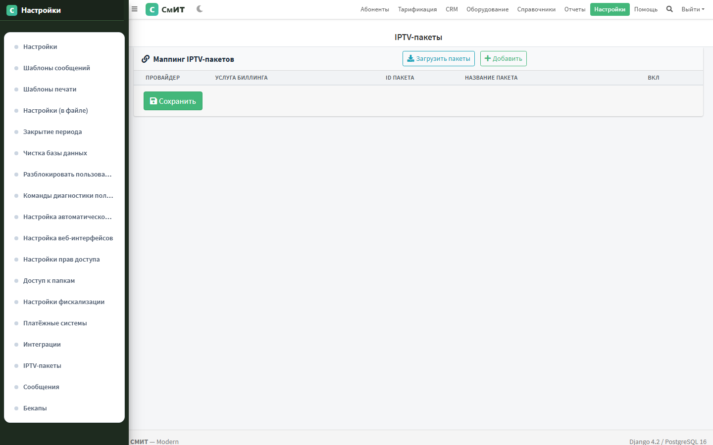

Интеграция с оборудованием
Раздел описывает интеграцию СмИТ Биллинг v1.6.0 (build 413) с сетевым оборудованием: NAS/BRAS-серверами, коммутаторами, VoIP-шлюзами, IPTV-системами и абонентским оборудованием.


Интернет оборудование — Пользовательская схема
Для интеграции нестандартного NAS-оборудования с СмИТ Биллинг 1.6 используется пользовательская схема. Процесс интеграции состоит из 5 шагов:
- Добавить NAS — зарегистрируйте новое NAS-устройство в разделе Оборудование → NAS веб-интерфейса биллинга. Укажите IP-адрес, тип устройства, RADIUS-secret.
- Настроить RADIUS — сконфигурируйте на NAS-устройстве параметры RADIUS-аутентификации: адрес RADIUS-сервера (IP биллинга), порты авторизации (1812) и учёта (1813), shared secret.
- Создать пользовательский скрипт — разработайте скрипт управления сессиями для вашего оборудования. Скрипт размещается в каталоге пользовательских бинарных файлов.
- Перезапустить nas_event_daemon — после добавления нового NAS перезапустите демон обработки событий для подхвата новой конфигурации.
- Верификация — выполните тестовую авторизацию абонента и убедитесь, что сессия корректно создаётся и завершается.
Пользовательские скрипты управления NAS размещаются в директории проекта и монтируются в Docker-контейнер FreeRADIUS:
# Создать пользовательский скрипт NAS
docker compose exec freeradius bash
cd /app/radius_python/nas_scripts/
cp template_session.py my_nas_session.py
# Отредактировать скрипт под ваше оборудование
# Перезапустить FreeRADIUS
docker compose restart freeradiusrlm_python3. Три виртуальных сервера: default (интернет, порты 1812/1813), voip (2812/2813), iptv (6812/6813).
Поддерживаемое интернет-оборудование
- Mikrotik RouterOS RADIUS-авторизация, PPPoE, Hotspot, DHCP
- Cisco IOS / IOS-XE AAA, PPPoE, IP Subscriber
- Juniper JUNOS AAA, DHCP Subscriber
- Huawei (ME60, NE серия) BRAS, PPPoE, IPoE
- Eltex (ESR, MES серия) RADIUS, DHCP option 82
- D-Link (DES, DGS серия) Option 82, VLAN-based авторизация
- Actelis / BDCom / BDCOM DSLAM, Option 82
- Linux (FreeRADIUS + iptables) Софтроутер на базе Linux
- Redback / Ericsson SmartEdge PPPoE BRAS
- UTStarcom / Iskratel DSLAM, GPON
- ZTE (C300/C600) OLT, GPON, RADIUS
- SNR (коммутаторы) Option 82, VLAN
- Прочие (пользовательская схема) Интеграция любого RADIUS-совместимого оборудования
Редактирование NAS — модальное окно
Начиная с build 329, все операции с NAS-устройствами выполняются в модальном окне (без перехода на отдельную страницу). Кнопка в строке таблицы открывает полнофункциональное окно редактирования.

Модальное окно содержит 6 вкладок:
- Основное — название, IP-адрес, маска, тип NAS, адрес установки (Адрес Select2), включён / производственный.
- RADIUS — shared secret, CoA-пароль/порт, пароль пользователей, флаги NetFlow и поведения при блокировке.
- Авторизация — 11 методов авторизации (логин, MAC, OPT82, IP, VLAN и др.).
- Управление — параметры SSH/Telnet-подключения: тип, IP, порт, логин, пароль.
- IP-пулы — привязка пулов: основной, NAT, белый, Hotspot, DNS, VLAN-пул, следующий NAS.
- OSS / Скрипты — пути скриптов, интерфейсы для MikroTik / Cisco / Redback.


Онлайн-абоненты NAS
Начиная с build 334, в столбце Онлайн таблицы NAS отображается кликабельная ссылка с числом активных сессий. Клик открывает модальное окно со списком абонентов, подключённых через данный NAS прямо сейчас.

Модальное окно «Онлайн на NAS» показывает до 200 активных сессий:
- # — порядковый номер строки.
- Абонент — имя абонента, ссылка на карточку открывается в новой вкладке.
- Логин — учётная запись (Users.login).
- IP — назначенный абоненту IP-адрес.
- Начало сессии — время старта из
USERS_RADIUSAUTH.RADIUS_START. - Обновление — время последнего Accounting-Update.

Кнопка Обновить перезагружает данные без закрытия окна. Если сессий больше 200 — отображается подсказка о лимите.
USERS_RADIUSAUTH по условию logged=1, user.nas_id=<id>. Если сессия зависла (NAS не прислал Accounting-Stop), она всё равно будет отображаться — используйте кнопку «Sync» для принудительной синхронизации.
Редактирование коммутаторов — модальное окно
Коммутаторы (/admin/equipment/Switch/) редактируются в модальном окне с двухколоночным макетом: слева — название и IP, справа — адрес установки (Select2), этаж, помещение.
Начиная с build 334, в таблице коммутаторов добавлена колонка Тип — отображает привязанный тип коммутатора (бейдж с названием). Тип определяет регулярные выражения для парсинга Option 82 и используется при OPT82-авторизации.


Типы коммутаторов
Справочник типов коммутаторов /admin/equipment/SwitchType/ — настройка правил парсинга DHCP Option 82 для каждого типа оборудования. Используется при авторизации абонентов по коммутатору.

С build 329 добавление и редактирование типов выполняется в модальном окне с двумя вкладками: Основные (название, признак «Порты с 0») и Opt82 (поля парсинга). Изменения сохраняются без перезагрузки страницы.

Параметры Opt82
Каждая запись задаёт регулярные выражения для извлечения данных из поля Option 82:
- PARS_SWIP — парсинг IP-адреса коммутатора
- PARS_PORT — парсинг номера порта
- PARS_VLAN / PARS_S-VLAN — парсинг VLAN / S-VLAN (QinQ)
- PARS_MAC — парсинг MAC-адреса
- PARS_PARAM — дополнительные параметры
- PARS_GPON_MODEM_PORT — номер GPON-порта модема
- PARS_HW_SERIAL — серийный номер устройства
- Порты с 0 — нумерация портов начинается с 0 (не с 1)
OPT82-авторизация
OPT82 (DHCP Option 82) — механизм авторизации абонентов по физическому расположению в сети: система определяет, к какому коммутатору и на какой порт подключён клиент, без необходимости знать его логин или MAC-адрес.
Как это работает
- Абонент подключает устройство к порту коммутатора и посылает DHCP-запрос.
- Коммутатор добавляет в DHCP-пакет поле Option 82 — информацию о своём IP-адресе и номере порта (формат зависит от производителя).
- DHCP-запрос попадает на NAS/BRAS, который перенаправляет его в FreeRADIUS биллинга.
- FreeRADIUS парсит Option 82 с помощью регулярных выражений из Типа коммутатора (PARS_SWIP, PARS_PORT, PARS_VLAN).
- Извлечённый IP коммутатора и номер порта ищутся в таблице
SwitchPorts→ находится привязанная учётная запись абонента (Users). - Биллинг авторизует абонента и возвращает RADIUS-атрибуты (IP из пула, скорость и т.д.).
Шаг 1 — Тип авторизации в учётной записи абонента
В карточке абонента откройте вкладку Учётные записи → кнопка редактирования учётной записи → вкладка Основные. В поле Тип авторизации выберите по OPT82.
Доступные типы авторизации (поле auth_type в таблице Users):
по ip static— по статическому IPпо CarbonAgent— агент на устройствечерез веб— веб-авторизациялюбая через RADIUS— стандартный RADIUS (логин/пароль)по OPT82— авторизация по порту коммутатора ← выбрать этотпо ip+radius— комбинированныйпо vpn pptp, pppoe— PPPoE/PPTP
Шаг 2 — Привязка к порту коммутатора
В той же карточке учётной записи перейдите на вкладку Сеть. Здесь три поля для OPT82:
- SWITCH — выберите коммутатор из справочника (
/admin/equipment/Switch/). Список фильтруется по мере ввода. - PORT — номер физического порта на коммутаторе (целое число).
- VLAN — VLAN-тег (опционально, если сеть использует VLAN-сегментацию).
После сохранения в таблице SwitchPorts создаётся запись: switch_id + port_num → user_id. Именно по ней FreeRADIUS находит абонента при авторизации.
Шаг 3 — Коммутатор в справочнике
Перейдите в Оборудование → Коммутаторы (/admin/equipment/Switch/). Убедитесь, что коммутатор добавлен с корректным IP-адресом — именно этот IP будет извлекаться из Option 82 и сравниваться с записями справочника.
Поля коммутатора:
- Название — произвольное имя для отображения.
- IP-адрес — IP коммутатора (должен совпадать с тем, что он пишет в Option 82).
- Адрес установки — физический адрес из справочника Адреса (опционально, для удобства).
- Этаж / Помещение — уточнение расположения.
Шаг 4 — Тип коммутатора (шаблоны парсинга)
Перейдите в Оборудование → Типы коммутаторов (/admin/equipment/SwitchType/). Каждый производитель по-своему кодирует данные в Option 82. Тип коммутатора задаёт регулярные выражения для их извлечения.
Проверьте, что для вашего оборудования создан тип с правильно заполненными полями PARS_SWIP (IP коммутатора) и PARS_PORT (номер порта). Если данных недостаточно — добавьте PARS_VLAN для VLAN-авторизации.
Шаг 5 — Флаги OPT82 на NAS
В карточке NAS (Оборудование → NAS → вкладка Авторизация) включите нужные флаги:
- auth_opt82_switch_ip — авторизация по IP коммутатора из Option 82.
- auth_opt82_port — уточнение по номеру порта.
- auth_opt82_vlan — уточнение по VLAN.
Обычно включают все три для максимальной точности идентификации.
Итоговая схема привязки
| Сущность | Где настраивать | Что задаётся |
|---|---|---|
| Учётная запись абонента | Карточка абонента → Учётные записи → вкладки Основные + Сеть | Тип авторизации = «по OPT82», SWITCH + PORT + VLAN |
| Коммутатор | /admin/equipment/Switch/ | Название, IP-адрес коммутатора, адрес установки |
| Тип коммутатора | /admin/equipment/SwitchType/ | Регулярные выражения PARS_SWIP / PARS_PORT / PARS_VLAN |
| NAS | Карточка NAS → вкладка Авторизация | Флаги auth_opt82_switch_ip / auth_opt82_port / auth_opt82_vlan |
Телефония
Содержание раздела
Типовой план интеграции VoIP-оборудования с СмИТ Биллинг v1.6.0 (build 413) занимает 20-30 минут и состоит из 7 этапов:
- Настройка OSS-схемы подключения к VoIP-шлюзу/АТС.
- Настройка парсера CDR-файлов (формат, кодировка, путь).
- Конфигурация правил нормализации телефонных номеров (E.164).
- Настройка направлений вызовов (VoIP-направления и категории).
- Создание тарифных планов телефонии (поминутная, посекундная тарификация).
- Тестовый вызов и верификация тарификации.
- Запуск сервиса в эксплуатацию.
Поддерживаемые OSS-схемы
- Unitel TS-004 — цифровая АТС, CDR через файловый обмен.
- Asterisk — открытая IP-АТС, CDR через CSV/RADIUS.
- Eltex SMG-1016M — медиашлюз, CDR через RADIUS.
- АТС М-200 — аналоговая АТС, CDR через RS-232/файл.
- Avaya — корпоративная АТС, CDR через SFTP.
Поддерживаемые парсеры CDR
| Парсер | Формат |
|---|---|
| D-Link | CSV |
| Asterisk | CSV / RADIUS |
| Cisco | CDR binary / CSV |
| Mera Networks (MVTS) | CSV |
| Alterteks | CSV с разделителем «;» |
| GNU Gk (GnuGatekeeper) | RADIUS / CSV |
| VoiceCom | CSV |
| Quintum Tenor | CSV / RADIUS |
| Unitel TS-004 | Проприетарный формат |
| АТС Iskratel SI3000 | CSV |
| Avaya | CSV / SFTP |
IPTV
СмИТ Биллинг v1.6.0 (build 413) интегрируется с IPTV-платформами для автоматического управления аккаунтами абонентов, ТВ-пакетами и блокировками. Интеграция работает в двух режимах:
- Событийный — при блокировке/разблокировке абонента или переключении услуги биллинг мгновенно синхронизирует состояние с IPTV-платформой.
- Периодический — ежедневная полная сверка через Celery Beat для устранения рассинхронизаций.
TVIP Media (TMS)
TVIP TMS — IPTV/OTT middleware для управления телевизионными услугами, абонентами и STB-приставками. Подключение через REST API с HTTP Basic Auth.

Настройка: Настройки → Интеграции → TVIP Media
| Параметр | Описание |
|---|---|
| URL панели TVIP | Адрес панели провайдера (https://my.tvip.media) |
| Логин / Пароль | Учётные данные для REST API (HTTP Basic Auth) |
| Provider ID | Идентификатор провайдера в TVIP (узнать в панели) |
| Включить интеграцию | Глобальный переключатель синхронизации |
Возможности интеграции с TVIP Media:
- Автоматическое создание аккаунтов абонентов (логин = номер договора)
- Подписка/отписка от ТВ-пакетов при смене тарифа или переключении услуг
- Блокировка/разблокировка аккаунта при отрицательном балансе
- Отправка команд на STB-приставки (обновление каналов, перезагрузка)
- Получение списка доступных ТВ-пакетов через API
LFStream (Смотрёшка)
LFStream — IPTV-прокси/CDN для доставки телевизионного контента. Управление аккаунтами абонентов и ТВ-пакетами через CMS-панель провайдера.

Настройка: Настройки → Интеграции → LFStream
| Параметр | Описание |
|---|---|
| URL API LFStream | Адрес панели провайдера (https://smit34.proxy.lfstrm.tv) |
| Логин / Пароль | Учётные данные для CMS-панели |
| Включить интеграцию | Глобальный переключатель синхронизации |
Маппинг IPTV-пакетов
Для каждого IPTV-провайдера необходимо настроить соответствие между услугами биллинга и пакетами во внешней системе. Настройка: Настройки → IPTV-пакеты.

Таблица маппинга содержит:
| Колонка | Описание |
|---|---|
| Провайдер | TVIP Media или LFStream |
| Услуга биллинга | Услуга (Usluga) из справочника биллинга |
| ID пакета | Идентификатор пакета во внешней IPTV-системе |
| Название пакета | Наименование пакета (для справки) |
| Вкл | Включён ли данный маппинг |
Кнопка Загрузить пакеты запрашивает актуальный список ТВ-пакетов у выбранного провайдера через API и добавляет строки в таблицу.
Синхронизация
Биллинг синхронизирует данные с IPTV-платформами в следующих случаях:
| Событие | Действие в IPTV |
|---|---|
| Блокировка абонента (отрицательный баланс) | Блокировка аккаунта в TVIP/LFStream |
| Разблокировка абонента (баланс восстановлен) | Разблокировка аккаунта |
| Включение IPTV-услуги абоненту | Подписка на соответствующий ТВ-пакет |
| Отключение IPTV-услуги | Отписка от ТВ-пакета |
| Ежедневная сверка (Celery Beat) | Полная проверка аккаунтов, подписок, блокировок |
Все API-вызовы логируются в таблице iptv_api_log для мониторинга и отладки.
Логи синхронизации с IPTV-платформами:
docker compose logs celery | grep iptv_sync
# Просмотр API-логов в Django shell:
from billing.models.iptv import IptvApiLog
IptvApiLog.objects.filter(success=False).order_by('-created_at')[:10]Другие поддерживаемые IPTV-платформы
- IPTVPortal — облачная платформа интерактивного ТВ.
- Infomir Ministra (Stalker) — middleware для STB-приставок.
- Megogo — онлайн-кинотеатр с IPTV-функциями.
- TITV — платформа интерактивного телевидения.
- NextTV — IPTV-middleware.
- 24hTV — сервис интернет-телевидения.
- MOOVI — OTT/IPTV-платформа.
Абонентское оборудование
Управление абонентским оборудованием (CPE): роутеры, модемы, ONT-терминалы. Биллинг поддерживает удалённую настройку оборудования через протокол TR-069 (CWMP). Для каждого устройства хранятся: модель, серийный номер, MAC-адрес, статус подключения, параметры конфигурации.
Камеры
Интеграция с системами видеонаблюдения, в частности Flussonic Watcher. Биллинг управляет подписками абонентов на услуги видеонаблюдения: активация/деактивация доступа к камерам, тарификация просмотра архива, управление правами доступа к группам камер.
Аренда оборудования
Модуль учёта оборудования, предоставляемого абонентам в аренду: Wi-Fi роутеры, STB-приставки, ONT-терминалы. Для каждой единицы оборудования ведётся учёт: привязка к абоненту, дата выдачи/возврата, состояние, начисление арендной платы. При блокировке или расторжении договора формируется уведомление о необходимости возврата оборудования.